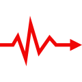

<ion-header>
  <ion-navbar>
    <ion-title style="text-align: center;" *ngIf="!NewTask">
      Task {{id}}
    </ion-title>
    <ion-title style="text-align: center;" *ngIf="NewTask">
      New Task
    </ion-title>
    <ion-buttons end>
      <button ion-button color="primary">
          Salvar
      </button>
    </ion-buttons>
  </ion-navbar>
</ion-header>
<ion-content padding id="page3">

    <!-- Task Corrigida -->
    <div class="center" *ngIf="tkCorrigido">
        <h3>Esta Task está </h3>
        
        <h1 style="color: #32db64;">Finalizada!</h1>
    </div>


    <!-- Task Pendente -->  
    <div class="center" *ngIf="tkPendente">
        <h3>Esta Task está</h3>
        
        <h1 style="color: rgba(255, 188, 5, 0.829);">Pendente</h1>
    </div>

    <!-- Task Parada a muito tempo -->
    <div class="center" *ngIf="tkParada">
        <h3>Esta Task está</h3>
        
        <h1 style="color: rgba(246, 19, 19);">Parada</h1>
    </div>

  <!-- Atribuido a quem -->
  <ion-item>
    <ion-label stacked left>
        Atribuido a
    </ion-label>
    <ion-select cancelText="Oops!" >
            <ion-option value="1">Thiago Serrano</ion-option>
            <ion-option value="2">Vivian Ikehara</ion-option>
            <ion-option value="3">Thor Odinson</ion-option>
            <ion-option value="4">No one</ion-option>
    </ion-select>    
</ion-item>

<!-- Status -->
<ion-item>
    <ion-label stacked left>
        Status
    </ion-label>

    <!-- Corrigido -->
    <ion-select cancelText="Oops!" *ngIf="tkCorrigido">
            <ion-option value="1" selected="true">Finalizada</ion-option>
            <ion-option value="2">Pendente</ion-option>
            <ion-option value="3">Parado</ion-option>
    </ion-select>  
    
    <!-- Pendente -->
    <ion-select cancelText="Oops!" *ngIf="tkPendente">
        <ion-option value="1">Finalizada</ion-option>
        <ion-option value="2" selected="true">Pendente</ion-option>
        <ion-option value="3">Parado</ion-option>
    </ion-select>    

<!-- Parado -->
    <ion-select cancelText="Oops!" *ngIf="tkParada">
        <ion-option value="1">Finalizada</ion-option>
        <ion-option value="2">Pendente</ion-option>
        <ion-option value="3" selected="true">Parada</ion-option>
    </ion-select>    

</ion-item>
<ion-item>   
    <ion-label stacked left>
        Descrição
    </ion-label>
    <ion-textarea placeholder="Digite a Descrição" value=""></ion-textarea>
</ion-item>

<ion-footer style="text-align: center;" color="titulo2">
    <p>Cadastrado por : {{pNome}}</p>
</ion-footer>
</ion-content>